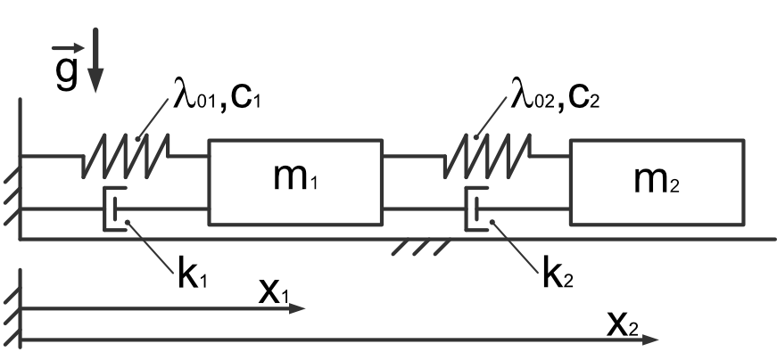

Dynamics: solving of systems of ODEs III
{kind=link}
- given:
\(t\in [0..10]s\) - time
\(x_1(t)\) - position of the first mass point
\(x_2(t)\) - position of the second mass point
\(m_1 = 1 kg\) - mass 1
\(m_2 = 1.5 kg\) - mass 2
\(c_1 = 8 \frac{N}{m}\) - spring stiffness 1
\(c_2 = 40 \frac{N}{m}\) - spring stiffness 2
\(\lambda_{01} = 0.5 m\) - initial length of spring 1
\(\lambda_{02} = 1 m\) - initial length of spring 2
\(k_1 = 0.8 \frac{N s}{m}\) - damping factor 1
\(k_2 = 0.5 \frac{N s}{m}\) - damping factor 2
\(^{\cdot}\) - derivative with respect to time
ICS: \(x_1(0) = 0.5 m; \dot{x}_1(0) = 0 \frac{m}{s}; x_2(0) = 2.25 m; \dot{x}_2(0) = 0 \frac{m}{s}\)
- wanted:
Equation of motion using Lagrange equation of second kind
solve the ODE system using scipy.odeint() and scipy.solve_ivp
- procedure:
define symbols and functions
get kinetic energy
get potential energy
get dissipation function
get applied forces
define Lagrangian
- apply formalism to get Euler-Lagrange equation / equation of motion
\(\frac{d}{dt}\left( \frac{\partial L}{\partial \dot{q}(t)}\right) - \frac{\partial L}{\partial q(t)} = -\frac{\partial d}{\partial \dot{q}(t)} + F \frac{\partial r_f}{\partial q(t)}\)
pseudo-code:
Note
Do this task inside a jupyter notebook!
clear variables
import sympy as sp
import ...
# define symbols
..., ..., ... = sp.symbols(...)
# define the components of the Lagrangian
T = ... # kinetic energy
U = ... # potential energy
d = ... # dissipation function
F = ... # general forces
# calculate the Lagrangian
L = T-U
# apply the formalism
EoMo1 = ...
EoMo2 = ...
# substitute values (optional)
EoMo1 = EoMo1.subs([(..,..),(..,..)...])
...
# define lambda function (optional)
fun1 = sp.lambdify(...)
fun2 = sp.lambdify(...)
# Setup system of ordinary differential equations of first order
# in order to solve the ordinary differential equations of second order (optional)
def ode_sys(...):
...
return
# Solve the IVP (optional)
from scipy.integrate import odeint, solve_ivp
sol = odeint(odesys, iniVal, t,...)
# plot results
....